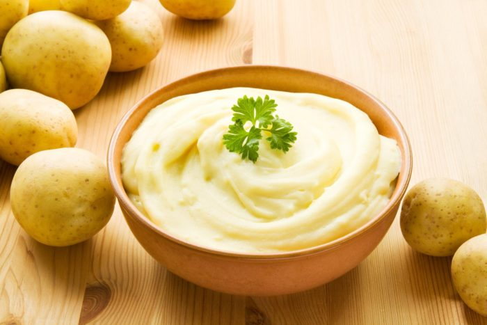

Batatas
A batata é um tubérculo com polpa de coloração amarelada e sabor levemente terroso. O tamanho, coloração da casca e textura podem variar bastante, dependendo da variedade.
Tipos de batatas
- Batata cerosa ou batatas para coser
- Baixo teor de amido. É adequada para aplicações que requerem uma batata firme, como: saladas com batata, ensopados e sopas com pedaços inteiros de batata.
- Batatas Multiuso
- Médio teor de amido.Serve com qualidade média a quase todas as preparações.
- Batata Farinhenta ou batatas para assar e fritar
- Alto teor de amido. É adequada para preparações, nas quais as batatas devem ser macias por dentro e crocantes por fora, como batata assada e batata frita. Além disso, é excelente para puré de batata e para espessar sopas e caldos.
Receitas com batatas
Puré de batata

O puré de batatas é um dos acompanhamentos mais usados devido à sua versatilidade, podendo ser utilizado tanto para carnes como para peixes. Para fazer um bom puré de batatas, existem algumas dicas que devem ser seguidas de modo a que ele fique cremoso.
Ingredientes necessários
- 2kg de batata farinhenta
- 8 colheres de sopa de manteiga sem sal derretida
- 1 chávena de natas ou leite integral
- Sal e pimenta a gosto
Modo de preparação
- Coloque as batatas numa panela grande e encha com água fria.
- Leve ao fogo alto até ferver, reduza o fogo e cozinhe por volta de 20 a 30 minutos ou até que as batatas estejam macias, mas firmes.
- Espete com um garfo para verificar.
- Escorra as batatas, descasque e passe num espremedor de batatas.
- Retorne as batatas espremidas para a mesma panela e incorpore a manteiga.
- Após incorporar a manteiga, adicione as natas, sal e pimenta.